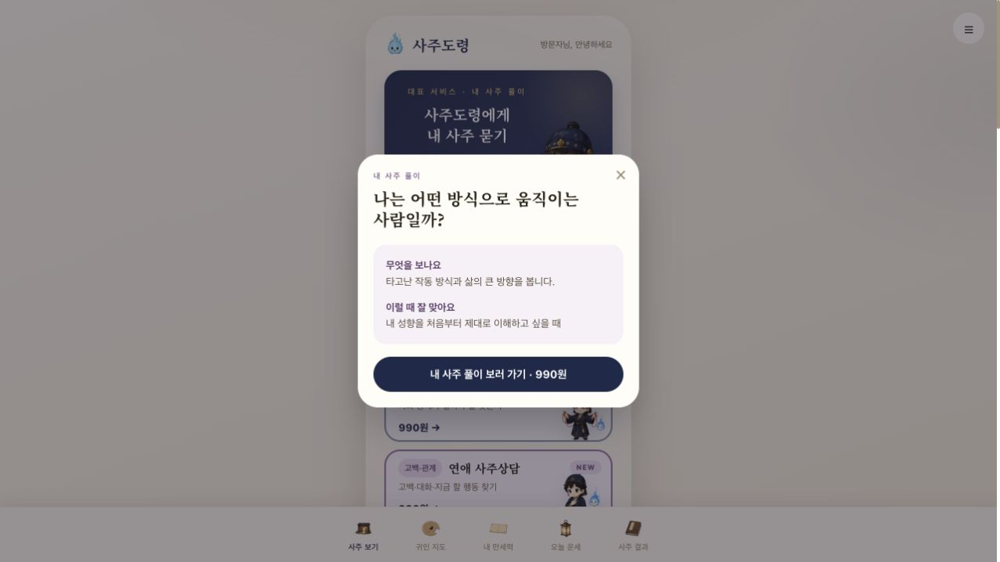
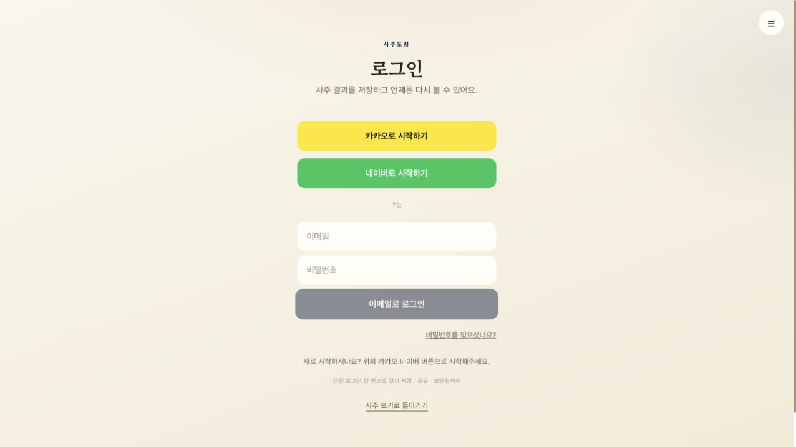
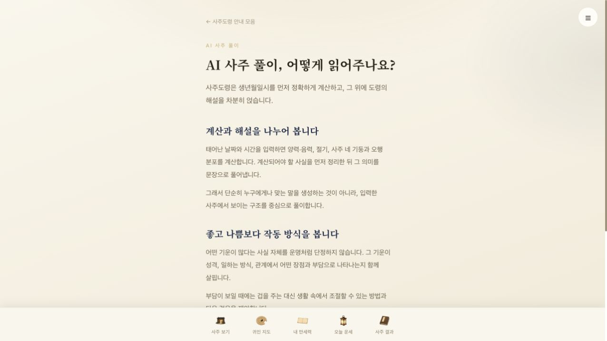
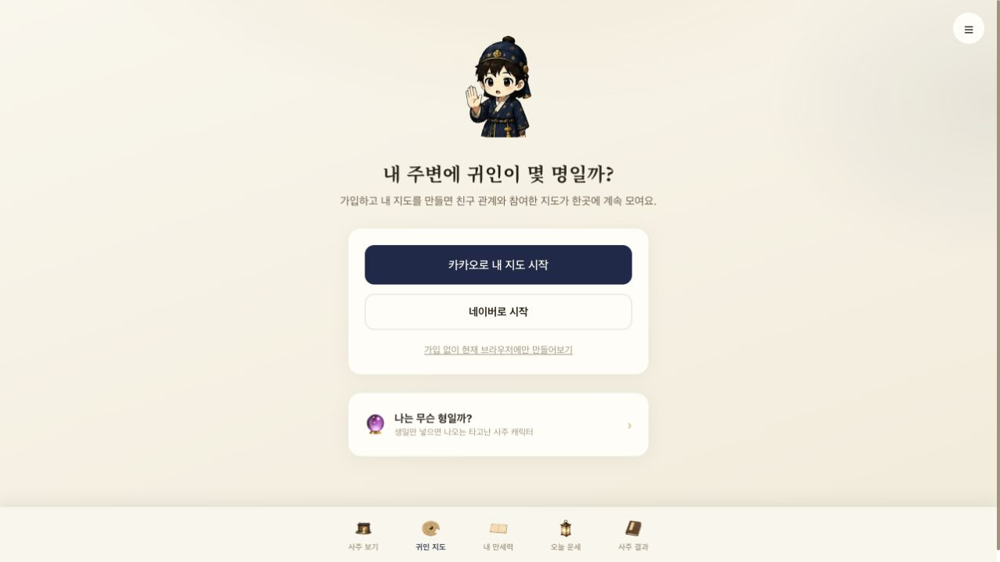
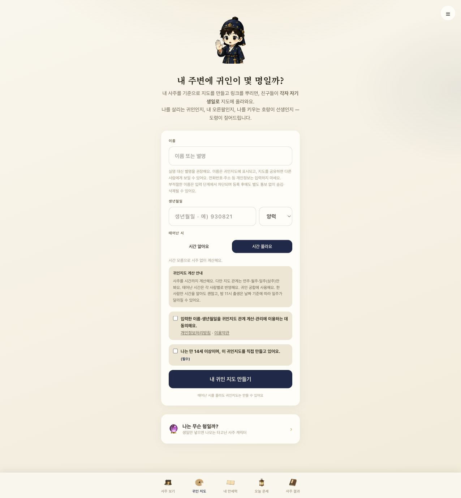
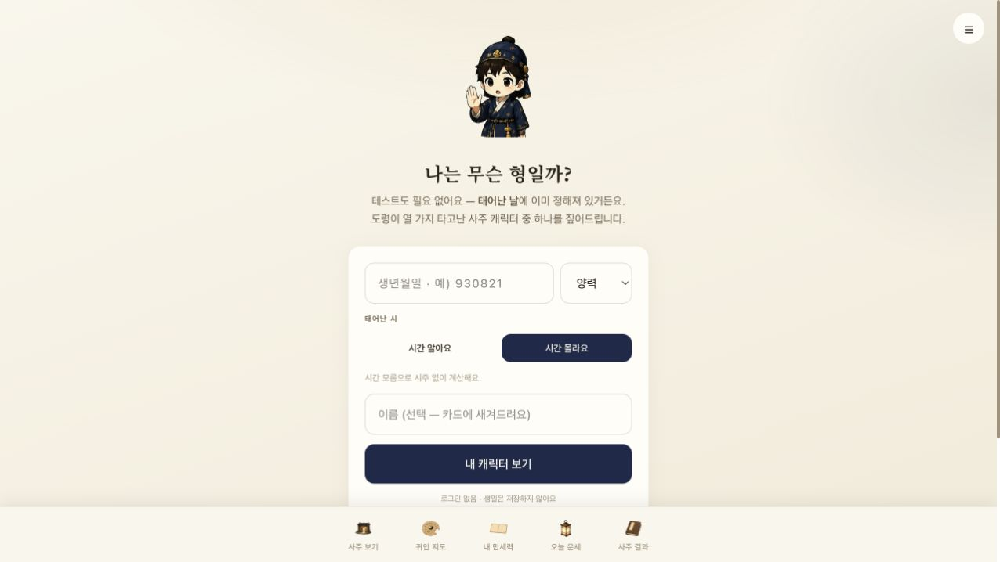
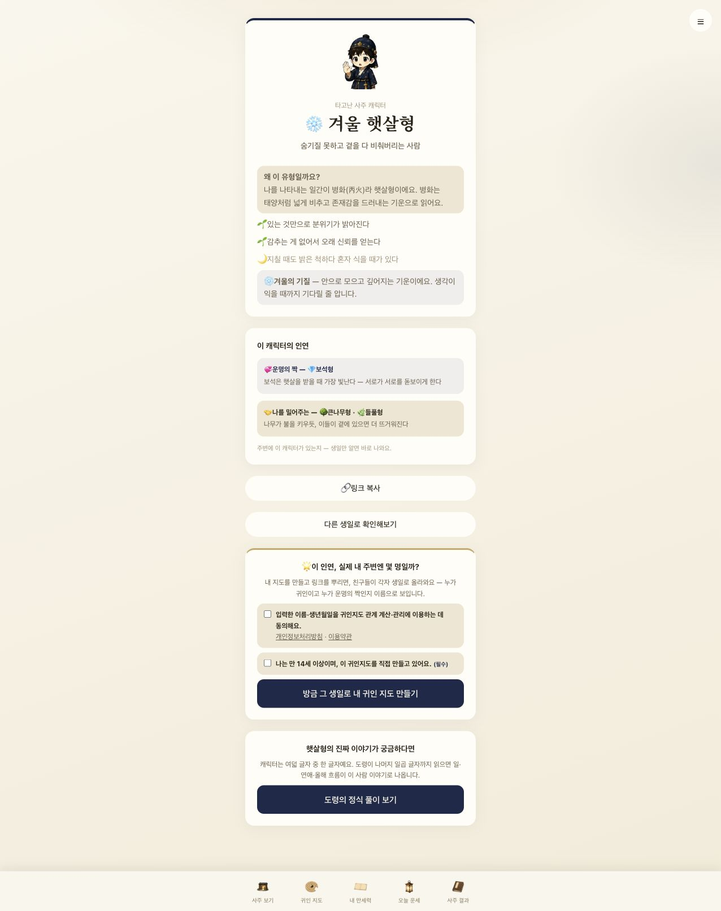

캐릭터 기반 AI 사주 서비스로, 비회원 유형 체험 → 관계 지도·공유 → 유료 해석으로 이어지는 구성이 핵심이다. 개선 우선순위는 기능 추가보다 이 체험 경로의 발견성과 구매 전 가치 설명이다.
홈에 표시된 주요 사주 상품은 990원, 고민 상담은 330원이다. 무료 오늘 운세, 캐릭터 유형, 귀인 지도, 결과 저장 메뉴가 있다. 무료 해설과 새 질문권을 구분한다. 관계와 자기 이해를 중심으로 작은 구매를 반복하도록 구성된 것으로 해석된다. 실제 매출·전환·재방문 수치는 확인하지 못했다.
공개 DOM의 /_next/static 및 turbopack 파일명은 Next.js 기반을 강하게 시사한다. Google Analytics gtag 스크립트도 확인했다. 이벤트 수집의 정상 동작까지는 확인하지 않았다. AI 모델·DB·결제사·서버 구조·보안·계산 정확도는 공개 화면만으로 알 수 없다. 현재 작업 폴더에는 소스 코드가 없다. 검색 도구는 홈페이지를 403으로 가져오지 못했으나 실제 브라우저에서는 접근했다. 이것만으로 일반 검색엔진 차단이라고 판단할 수 없다.
작고 흐린 보조 문구와 하단 메뉴 라벨은 가독성 위험이 있다. 캐릭터 폼의 placeholder 의존을 줄이고 상시 레이블을 제공하는 편이 좋다. 닫힌 메뉴의 항목이 접근성 스냅샷에 나타나므로 숨김 및 포커스 처리를 추가 점검할 필요가 있다. 명암비 수치·키보드 순서·스크린리더·모바일 실기기는 검증하지 않았으며 WCAG 위반 여부는 확정하지 않는다.
캐릭터·색상·가격 안내가 일관적이다. 유료 상품이 먼저 보이고 비회원 캐릭터 체험은 아래에 있다. 연애운·궁합·연애 상담·재회운은 선택 기준을 더 짧고 명확하게 설명하면 좋다.
무엇을 보는지와 가격은 분명하다. 다만 로그인 전에 결과 샘플·분량·예상 소요시간을 확인할 수 없는 설명 모달이라 구매 가치 판단이 어렵다.

/saju는 로그인으로 이동한다. 카카오·네이버 가입과 기존 이메일 로그인을 제공한다. 저장 이점을 안내하지만 체험 전 가입 마찰은 남는다. 로그인과 결제는 진행하지 않았다.

/daily도 로그인으로 이동한다. 무료와 비회원은 다른 조건이다. 홈에서 로그인 필요 여부를 미리 알려 기대 차이를 줄일 수 있다.
서비스 설명은 만세력 계산과 AI 해설을 분리한다고 밝힌다. 실제 계산 코드와 정확도는 검증하지 않았다. 핵심 설명을 구매 전 화면에도 짧게 노출하면 좋다.

가입 및 비회원 체험을 모두 제공한다. 친구 초대와 관계 확인의 목적이 분명하다. 비회원 링크는 상대적으로 작고 흐려 발견하기 어렵다.

별명 사용·공유 범위·시간 모름을 안내한다. 설명문과 계산 안내가 길다. 핵심 정보와 상세 설명을 분리하면 부담을 줄일 수 있다. 동의 및 지도 생성은 진행하지 않았다.

비회원이며 이름은 선택이다. 가상 생일 900101, 양력, 시간 모름으로 시험했다. 생일·이름은 placeholder 외에도 항상 보이는 레이블을 권장한다.

겨울 햇살형 결과가 생성되었다. 분류 이유·장단점·관계 유형을 설명하고 링크 복사·귀인 지도·유료 풀이로 연결한다. 실제 공유나 지도 생성은 실행하지 않았다. 유료 풀이 버튼은 긴 화면 하단에 있다.

만세력 계산 경계 조건(음력·윤달·절기·밤 11시), 계산과 AI 해석 데이터 흐름, 중복 결제·생성 실패 복구, 결과 접근 권한과 공유 범위, API 비용·캐시, 퍼널 이벤트를 확인해야 한다. 이번에 발견한 결함이 아니라 후속 검증 항목이다.